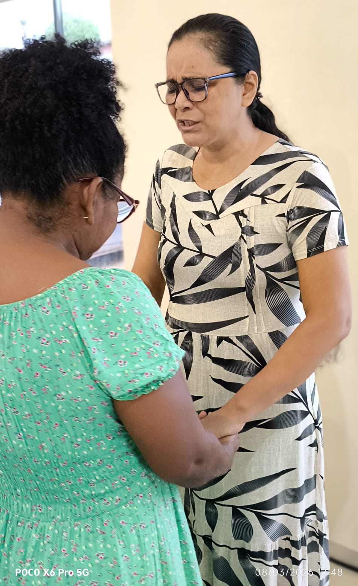

Transformamos a fé em ação através de iniciativas que restauram a dignidade e levam esperança às famílias mais vulneráveis da nossa comunidade.
A Ação Social Maranata nasceu do desejo profundo de manifestar o Reino de Deus através do serviço prático. Acreditamos que cada indivíduo é portador da imagem de Deus e merece viver com dignidade.
Mais que palavras, oferecemos mãos dispostas e corações abertos para suprir necessidades reais.
Construímos pontes entre quem pode ajudar e quem precisa ser ajudado, fortalecendo laços sociais.
Nossa principal frente de combate à insegurança alimentar. Mais do que alimentos, entregamos esperança e a certeza de que ninguém está sozinho em sua jornada.
Números atualizados em breve.


Descubra como atuamos em diferentes áreas para transformar realidades através de projetos sustentáveis e campanhas pontuais.

Consultas periódicas e distribuição de medicamentos para famílias cadastradas.
Saber mais arrow_forward
Apoio pedagógico e oficinas culturais para crianças e adolescentes da região.
Saber mais arrow_forwardGeração de renda através de cursos de capacitação técnica para adultos.
Saber mais arrow_forwardContribua com valores únicos ou recorrentes via PIX, Cartão ou Boleto.
Doe seu tempo e talento em nossas frentes de atuação local.
Entregue alimentos não perecíveis diretamente em nossa sede.
Estamos aqui para apoiar você e sua família. Siga o processo para cadastramento em nossos projetos.
Procure nossa secretaria social às terças e quintas, das 09h às 16h.
Tenha em mãos RG, CPF e comprovante de residência atualizado.
Nossa equipe de assistência social entrará em contato para agendar uma visita.
Cestas entregues regularmente
Famílias acompanhadas com carinho
Voluntários servindo com alegria
Em breve, compartilharemos aqui relatos reais de famílias e voluntários impactados pela Ação Social.
Quem apoia esta causa